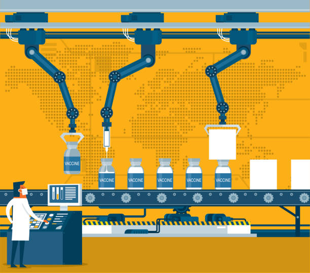
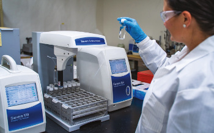
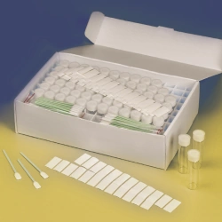

Pharma TOC Analyzer
Welcome to Agua Instruments' Pharma TOC Analyzer page. Our Total Organic Carbon (TOC) analyzers are designed to meet the stringent requirements of the pharmaceutical industry. With advanced TOC Monitoring capabilities and High-Sensitivity TOC Detection, our analyzers provide precise and reliable Real-Time TOC Measurement. Whether you need Automated TOC Analysis for your lab or a robust TOC Instrumentation for your production line, Agua Instruments has the perfect solution.
Why Choose Agua Instruments for Pharma TOC Analyzers?
Cutting-Edge Technology
Our TOC Analyzers utilize the latest technology for accurate and reliable TOC measurements.
Comprehensive Solutions
We provide tailored TOC Monitoring systems to meet the specific needs of the pharmaceutical industry.
Full Support
From installation to maintenance, we offer comprehensive support services to ensure effective operation.
Cost-Effective
Our solutions are competitively priced, ensuring you receive the best value without compromising on quality.
Regulatory Compliance
Our analyzers are designed to help you meet stringent pharmaceutical standards and regulatory requirements.

Monitor TOC levels in purified water, water for injection, and other pharmaceutical water systems to ensure compliance and quality.

Use Real-Time TOC Measurement to monitor and control TOC levels in production processes, ensuring product quality and safety.

Implement Automated TOC Analysis in laboratory settings to streamline quality control processes and ensure accurate results.

Verify the effectiveness of cleaning processes by measuring TOC levels to ensure no residual contamination.
Utilize TOC Validation to comply with industry standards such as USP, EP, and JP.